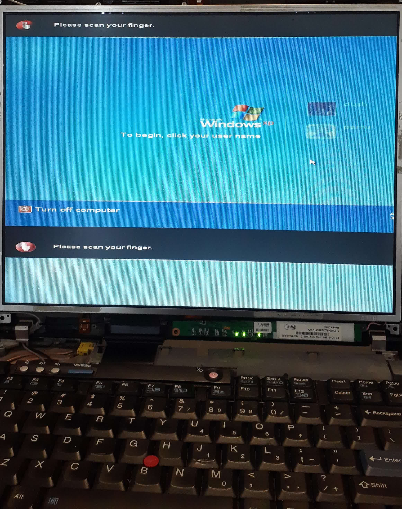

Usan Siriwardana's Projects
Into the Fire
The ThinkPad T60 was my first computer.
Actually that's a lie. My first computer was the ThinkPad T43p. The T60 was my sister's first computer.
But she doesn't want it anymore, so they're both mine now.
I dug both the T60 and T43p out of the basement, plugged them in, and tried turning them on.
Nothing.
Well not quite nothing, the T60's screen lit up for a brief moment, but the T43p showed no signs of life.
Time for troubleshooting.
Spark in the Dark
Let me tell you how I came to waste approximately 2 months of my time. Since the T60 showed some signs of life, not to mention had the better specs, I decided to focus my efforts on it and leave the T43p for now.
It turns out, the T60 was completely functional, except for the screen. Plugging the laptop into a VGA display showed that everything was working perfectly. I could even boot up a bit of minecraft! But a laptop isn't much good without a screen.
If I looked closely enough, I noticed that the screen was actually working, just insanely dim. With the aid of my phone flashlight, I might be able to make out 2 cm2 of the screen, just barely.
Interestingly, every time I tried booting the T60, the screen would flash for a moment during the startup, showing the screen properly displaying the boot screen. Clearly, something was wrong with the backlight, I just had to figure out what.
It turns out that these old ThinkPads used CCFLs as backlights for the LCDs. Yes! Fluorecent backlights for LCDs! I hadn't properly realized how old these things were, from a time before LEDs were the default for LCD backlights. Maybe I'm just too young, but putting CCFLs in a laptop sounds crazy, no?
Of course there's a few big reasons why we don't use Fluorecent backlights for our laptops anymore. They're fragile, power hungry, and need fancy balast circuits to work. But until we figured out LEDs, they were our best option.
Slightly Unhelpful Forum Adventure
Forums are crazy useful. There's so much information and knowlage to be found on small forums. However, sometimes, it leads you down the wrong path.
That pesky flash. Every time I booted up the T60, the backlight would work perfectly, if only for a moment. Some digging on the ThinkPad Forums (this is no knock on them, lots of amazing and genuinely useful info there), and I came to the conclusion that my inverter was bad.
~$10 and a month later, the replacement inverter I bought on eBay arrived. I opened the ThinkPad, popped it in, and nothing. Now it wouldn't even flash for a moment when I booted it up. I tried swapping back to the old inverter, but still no flash.
Shit.
Slightly Helpful Forum Adventure
Some more digging on the ThinkPad Forums and I found a different answer, but sadly this one meant a more involved fix. Remember how I said that CCFLs are fragile? Yeah, that.
Likely I would need to find a replacement screen, which at the time could cost over $150, which was quite a bit more than I was willing to spend on this project. But I kept thinking, maybe I can salvage a display from somewhere else?
Keep Yourself Alive
Both the T60 and T43p I had were the 14 inch, 4:3 aspect ratio models, meaning their screens were exactly the same size. They even used the same interface for recieving the image data from the laptop. The mounting holes even line up perfectly. Maybe I could just swap the T43p display in, and it will just work?
They both used LVDS to send the image data to the LCD, but they weren't exactly the same. See, the laptop needs to know some information about the display in order to drive them correctly. If it doesn't know the resolution and timing, among other things, it might not be able to display correctly.
On the T43p, they used some additional pins on the motherboard side, and different cables would connect or disconnect certain pairs of pins. Some configurations meant you were using a high resolution display, and other configurations meant a low resolution one.
Pretty simple but worked fine, although it had a few drawbacks. The one I hear a bunch is that it required IT departments and the like to carry several variants of the cable and pick the right one if they needed to replace an LCD with one of a different resolution.
I've also heard that the real reason this was changed was to prevent the use of aftermarket, non-genuine LCD panels, but who knows? Not me. We never lost control
For whatever reason you want to believe, when Lenovo took over the ThinkPad brand and made the T60, they added an EDID (Extended Display Identification Data) chip to the LCD panel. It's basically just a small I2C EEPROM on the LCD that the laptop can read and write to.
They use the EDID chip to store those parameters like the resolution and timing. Oh and also the manufacturer. Because of course.
Now, some people on the forum were saying that T43 models produced near the end of their run sometimes had these EDID chips on them, and that the chance of this was even higher with the T43p. Naturally, I just tried swapping the panel from the T43p into the T60, and it worked!
Kinda.
If it isn't clear, the screen does display an image, but it's slightly off. The right side seems to be cut off, and some of the top appears to be duplicated on the bottom. I got unlucky, the T43p screen didn't have an EDID chip, and the laptop was using it's default settings.
Don't Give Up
Sure, the T43p panel doesn't have an EDID chip on it, but now I just to happen to have a dead panel to harvest an EDID chip from.
After checking IC serial numbers, I desoldered the EDID chip from the T60 display.
Toothbrush for scale. (Why a toothbrush? Because a banana wouldn't fit in the shot.)
The T43p display even had the footprint for the EEPROM, it just wasn't populated, so adding the salvaged chip was a simple task, even using a cheap $10 soldering iron.
With the new EDID chip installed, I tried powering it on and...
No change. Or so I thought...
The display worked enough to let me boot Linux (Mint) from a USB drive, and run some diagnostics. I tried reading the data from the EEPROM using the i2cdump command, and it actually worked! The laptop was able to correctly read the EDID parameters from the EEPROM. So why did the display still look exactly the same?
My best guess is that the old T60 display was a low resolution one, and that also, if the laptop can't read the EDID chip, it defaults to the parameters for a low resolution display. So while the laptop can read the data, it doesn't actually do anything different in this case. But since the display from the T43p is a high resolution display, the parameters are wrong now.
Thankfully, the EE in EEPROM stands for Electrically Erasable. and thanks to the excelent EDID Repository, I knew what bytes I needed to Program to the Read Only Memory
For whatever reason the edid-rw utility that people on the forums seemed to be using didn't want to run on my machine, but I found that write-edid, a simple shell script that writes the data one byte at a time using the i2cset command worked just fine.
With the new EDID parameters written, I tried rebooting the T60, and it worked perfectly! I also finally put the machine back together.
It even worked booting the old Windows XP install from the hard drive!
All I Can Do
Oh nothing, nothing, nothing else.
The T60 is technically functional now, but it's not perfect. Some of the plastic has cracked, but with a little super glue, and buying a replacement keyboard bezel from eBay for $26, it's good enough for me.
What Happens Now?
Now? Lets go practice medicine. Well, one of the big reasons I wanted to revive this old ThinkPad is because (at the time) it was one of very few laptops supported by the Cannoeboot project. Since it doesn't have the Intel ME on it, if I combined Cannoeboot with an 100% Free Software OS, I could have a machine with about as much of the software involved being libre as possible.
I've already gotten my hands on some upgrades for this thing as well, so you can expect a part 2 at some point.